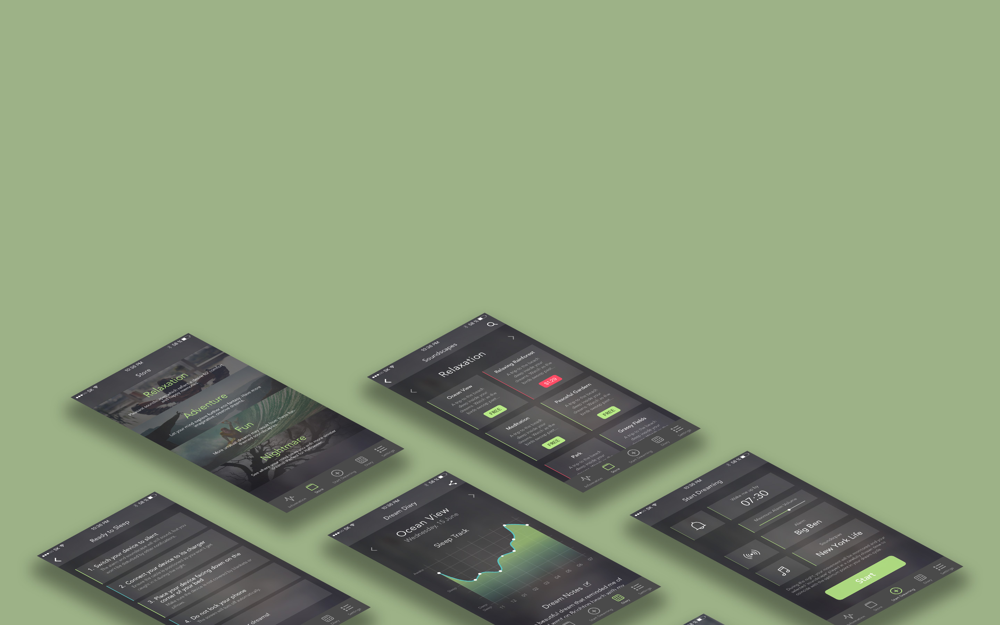

Mobile App & Web User Interface

Redesign for 'DreamOn' mobile user interface.
I used black background and light red-green palette for the new interface.
Red color indicates 'stop' or 'pay' actions that people normally need to pay attention to.
Green color is used in most other cases to indicate a fresh and sweet dreaming experience.
A set of modern style (left) and post-modern style (right) web design form Michigan Marguerit Farm.
The modern style adopted simple and clean grid, which align and holds different contents.
Different shapes contribute to clear hierachy and interesting composition.
The post-modern style uses layers, collage, and blur to create a different feeling.
DIY page for marshall amplifier store.
This page tells the story of the full cycle of am amplifier, from construction to deconstruction.
The strong and bold typography as well as industrial pictures encourages the expression of inner personality.